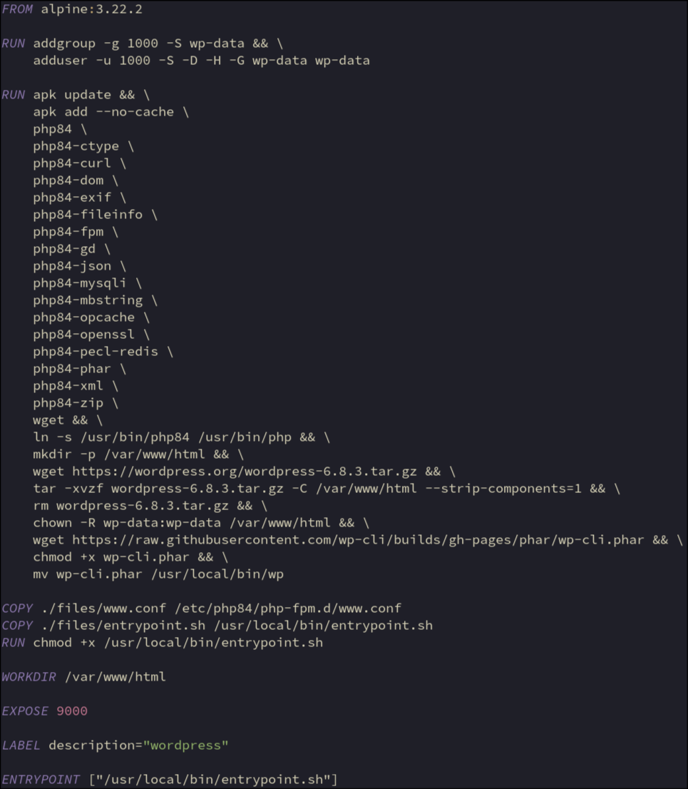

Create user to run php-fpm
User with same uid/gid created in ftp container to allow read/write access
Install packages:
php = base php interpreter
php-ctype = required for redis cache (bonus)
php-curl = Handles remote requests, allowing WordPress to connect with external servers
php-dom = Allows PHP to read, parse, and modify XML/HTML documents
php-exif = Reads metadata from image files
php-fileinfo = Detects file types by examining file content
php-fpm = FastCGI process manager. Runs php code
php-gd = Graphics Drawing library for image manipulation. Creates, resizes, crops, and modifies images using PHP
php-json = Converts between PHP arrays/objects and JSON strings
php-mysqli = Allows PHP to connect to and query MySQL/MariaDB databases
php-mbstring = Handles text encoding properly, especially for non-English characters
php-opcache = Caches compiled PHP code in memory to avoid recompiling on every request
php-openssl = Handles secure communications, encryption, and SSL/TLS connections. External https requests etc. wouldn’t work without it
php-pecl-redis = required for redis cache (bonus)
php-phar = allows execution of php archives (.phar). Needed for wp-cli
php-xml = sed for reading/writing XML data, such as configuration files, web services, or import/export functionality
php-zip = needed to deal with zip files when updating etc
wget = needed to download wordpress
ln -s /usr/bin/php84 /usr/bin/php
allows php to be with command ‘php’ not ‘php84’
Download, extract and move wordpress files to correct location, remove archive
Set ownership to wp-data
Download, extract, make executable and move wp-cli to bin
Add php-fpm config to container
Add entrypoint script to container
Make entrypoint script executable
Set working directory to wordpress root (host mount)
Port to communicate with nginx fastcgi
Run entrypoint script when container starts